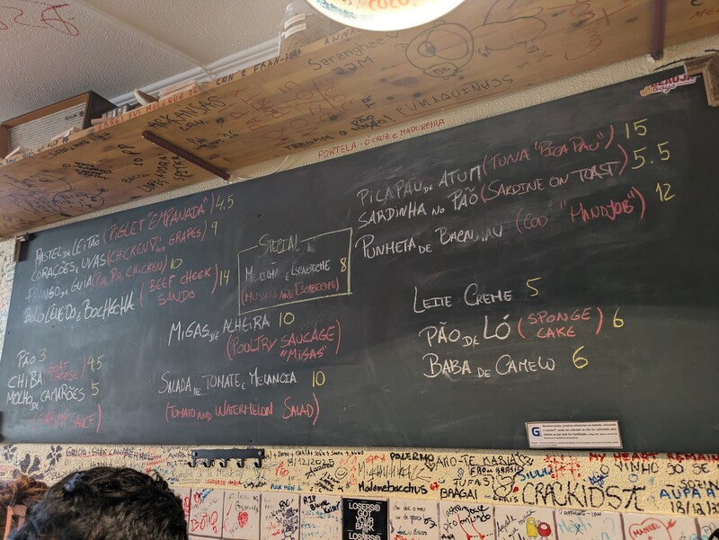
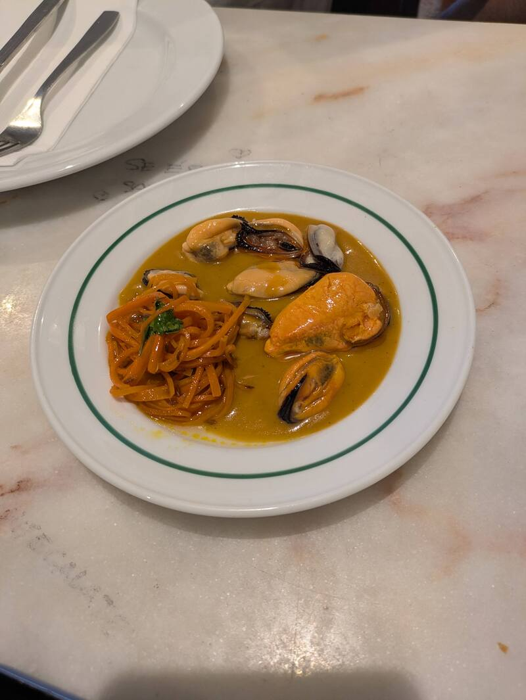
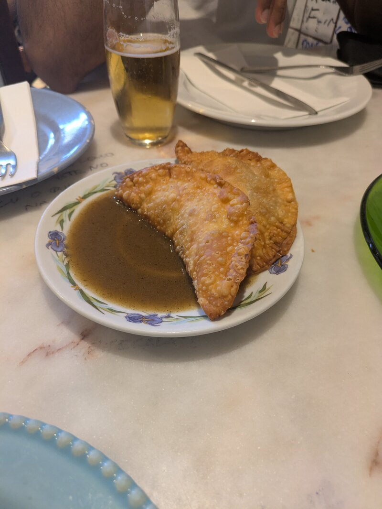
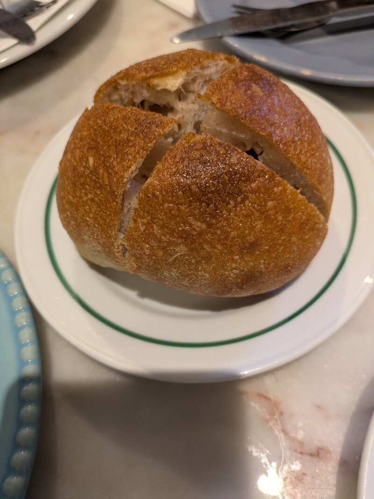
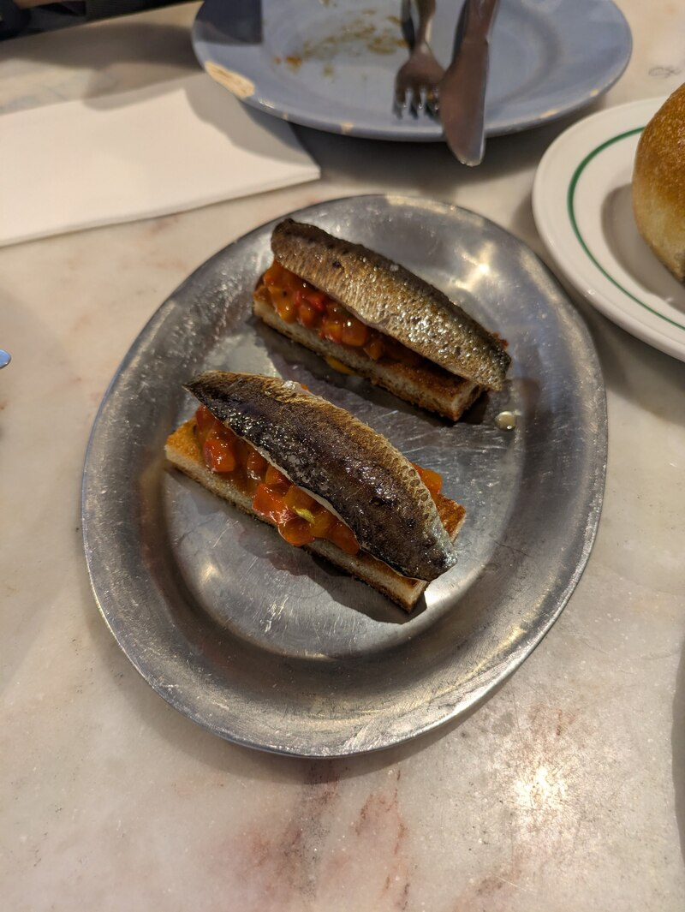
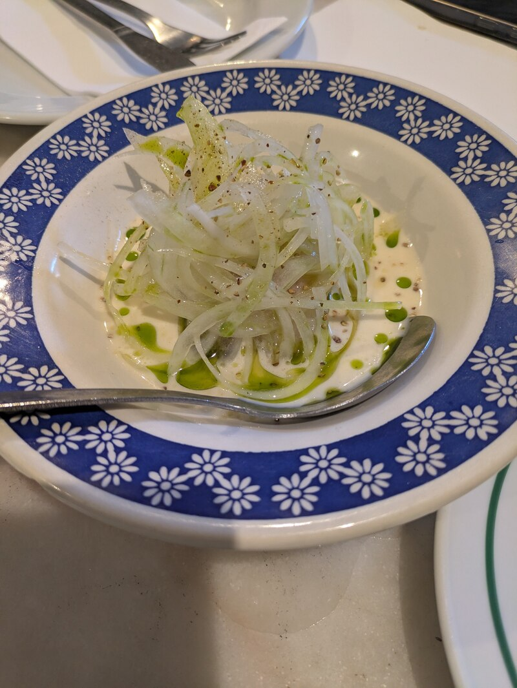
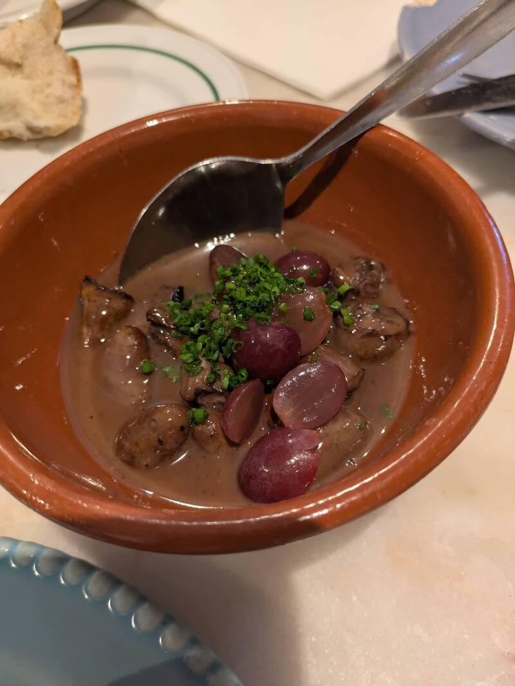
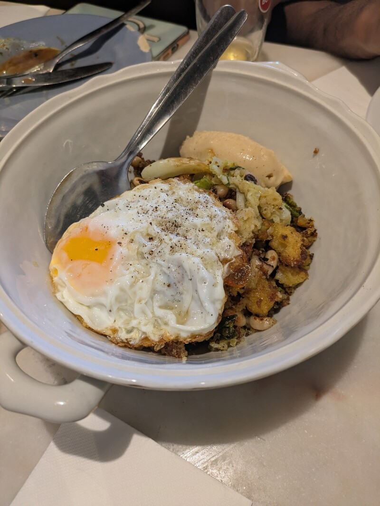
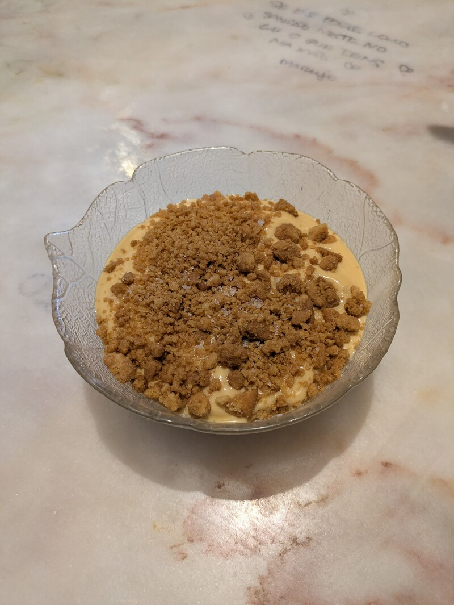
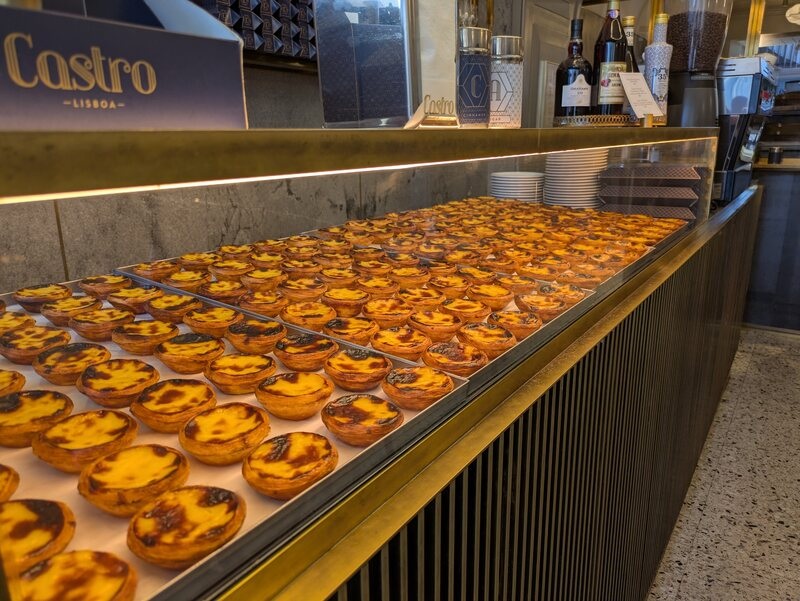

For a brief moment in time, imagine this is a food blog..
When we were in Portugal last September, we visited O Velho Eurico - a Portuguese home-style food that is delicious and not overpriced. I enjoyed the food so much and it was also a nice way to close out the trip. I am rarely so excited about going to a restaurant and it felt homey, so this was a treat worth documenting.
We were lucky to get in because they have reservations booked two months in advance and only a few open tables for walk-ins. Ten minutes before opening felt too late - there were three groups ahead of us and five behind, but we all ended up getting seated by the end of service.
The service staff are all chefs and made the food themselves. So they come off like they want you to take your time to enjoy the food. We held back some plates when we were done and said we wanted the pão to come by so we could soak up the juices; they were happy to hear that.

Mid-service, they came out with a bottle of what tasted like Feni (or something quite similar) and poured shots for everyone.
Below is a list of the things we ordered and every single damn one was DELICIOUS.
Mexilhão em Escabeche (Pickled Mussels)

Soft, fresh, and in a savoury gravy with carrot. This was the first dish we had and after we ate all the mussels, I knew we goofed by not getting the pão immediately at the same time to soak up the sauce.
Pastel de Leitao (Pork empanadas)

Usually, empanadas are dry and flaky. Even when fresh, they are soft and hot and the center can tend to be a bit dough-y, but still turn flakey very quickly. These were not — crispy exterior with a juicy shredded pork filling. Don’t single dip, don’t double dip — triple dip that empanada in the sauce! It reminded me of a steak pie my mother makes.
Pão (Bread buns)

Hot and immediately out from the oven. It takes a full 10 mins to arrive from order because it truly is fresh out from it. Steamy.
Sardinhas no pão (Sardines on toast)

These seemed like they were stripped from the bone and steamed with a thickened sauce made from everything else, on a gently flattened toast. It goes down like butter.
Punheta de Bacalhau (Cod “handjob”)

They serve it with a smile. I was hesitant because the Portuguese cod that I’ve seen is typically dried and salted and that flavour is not my thing.
Fresh cod was quite nice. Nice, but its fault is that it was surrounded by other dishes that were a bit more interesting, so it didn’t stand out for that reason.
Corações e Uvas (Chicken hearts and grapes)

I haven’t had chicken heart like this before — typically it's fried and chopped, so it comes off dry and grainy.
The dish here were whole hearts that were seared, and they possibly cooked it in a red wine while it reduced with the grapes. Another dish that needs the pão.
Migas de Alheira (Breaded chicken sausage)

Like a Portuguese take on Korean bibimbap! Crispy bread, sausage, fried egg and some kind of bread made into a wet paste? Mixed up, it came out really well together and each bite brought out each individual flavour.
Baba de Camelo “Camel drool”

Like a desert we have in Goa as well, but this was more runny. It had three main layers: a cold cream at the bottom, a whipped custard in the middle, and a crust crumble topped with some salt flakes.
When you scoop all three layers, it pulls away like drool; does not taste like camel.
That's all - go early, try everything. It's one of the few places that you want to tip them.
Castro

Random shout-out to Castro for the creamy and balanced Pasteis de Nata. It doesn’t get the same hype as Pasteis de Belém or Manteigaria, but the consistency of balanced flavour and richness is top-notch for me; always go in the morning and get them fresh!